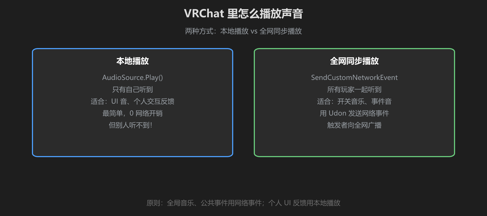
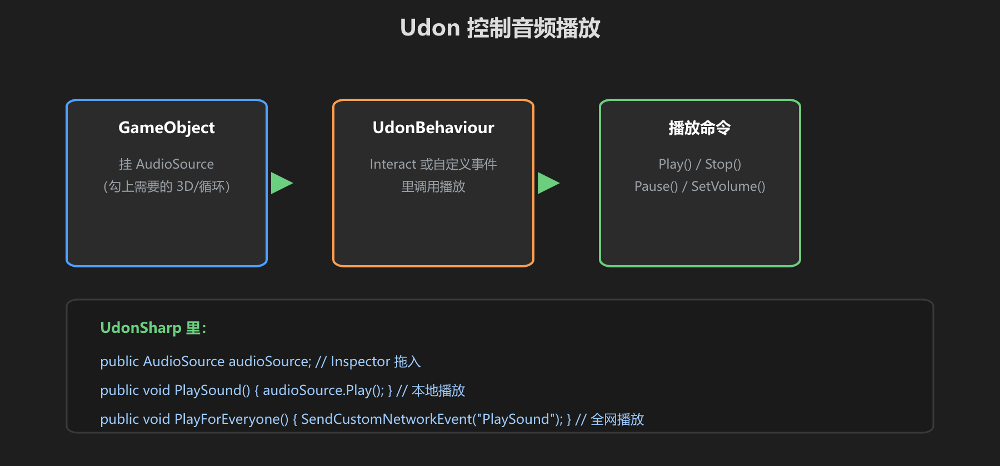
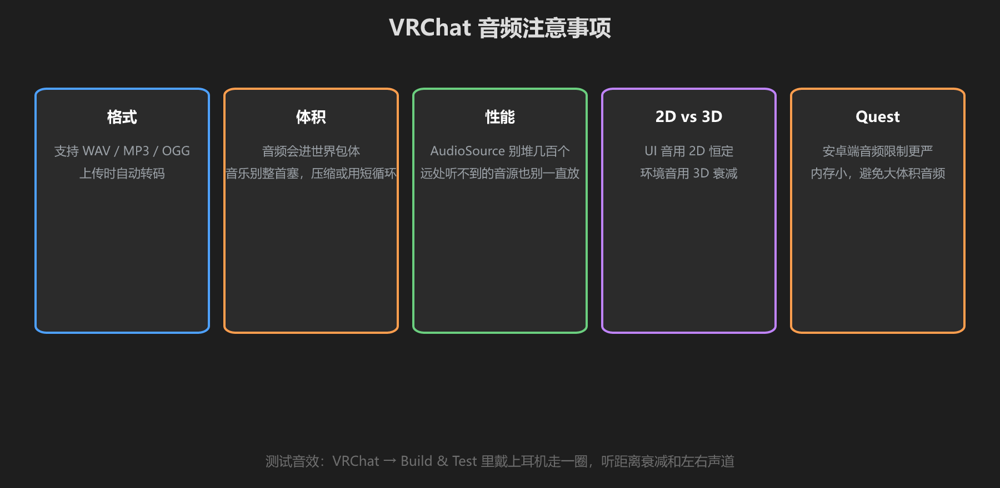

第 4 篇：VRChat 音频实践 — 本地播放与全网同步
VRChat 是多人世界：你按按钮，别人也要听到声音才合理。这一篇讲清「本地播放」和「全网同步播放」的区别，以及性能注意点。
1. 两种播放方式

图：AudioSource.Play() 只有自己听到；SendCustomNetworkEvent 全网同步
| 本地播放 | 全网同步播放 | |
|---|---|---|
| 方式 | AudioSource.Play() | SendCustomNetworkEvent 广播 |
| 谁听到 | 只有自己 | 所有玩家 |
| 适合 | UI 反馈、个人交互 | 音乐开关、公共事件音 |
| 开销 | 0 网络开销 | 有网络消息开销 |
判断口诀：这件事"别人需要知道吗"？需要 → 网络事件；不需要 → 本地播放。
2. Udon 控制音频

图：AudioSource 组件 + Udon 脚本 = 程序化播放
用 UdonSharp 写一个播放器（放在 Assets/_MyWorld/Scripts/Components/ 下，命名以 Component 结尾）：
public class AudioPlayerComponent : UdonSharpBehaviour
{
public AudioSource audioSource; // Inspector 拖入
public void PlayLocal() // 本地播放（自己听到）
{
audioSource.Play();
}
public void PlayForEveryone() // 全网同步播放
{
SendCustomNetworkEvent("PlayLocal");
}
}- Stop() / Pause()：停止 / 暂停
- volume：动态调音量（如走近调大）
- pitch：随机音高做音效变化（脚步、打击声不呆板）
网络事件注意：SendCustomNetworkEvent 只对"挂载在同一 GameObject 上的 UdonBehaviour"生效，且新加入的玩家不会收到已发生的事件 —— 需要"新玩家加入时补播"逻辑时，在 OnPlayerJoined 里广播。
3. VRChat 音频注意事项

图：格式、体积、性能、2D/3D、Quest 五条注意事项
- 格式：WAV / MP3 / OGG 都支持，上传自动转码
- 体积：音频进世界包体，音乐别塞整首，用短循环或压缩
- 性能：AudioSource 别堆几百个，远处的音源也别一直放着播
- 2D vs 3D：UI 音 2D，环境音 3D（第 3 篇）
- Quest：安卓端内存小，避免大体积音频、同时播放数量少
常见翻车：给 200 个拾取物都挂 AudioSource 且 Play On Awake + 3D —— 全场景同时解压播放，掉帧警告。用「距离玩家近才播」的 Udon 逻辑，或只留必要的。
动手：做按钮音效
- 放一个按钮（VRC_UIShape 或碰撞体），挂 AudioSource（UI 总线）
- 写/用 AudioPlayerComponent，Inspector 把 audioSource 拖进去
- 按钮触发 PlayLocal（自己反馈）+ 需要时 PlayForEveryone
- Build & Test 里让朋友点按钮，确认双方都能听到
学前检查清单
- 理解本地播放 vs 网络同步播放的区别
- 写了一个 Udon 播放音频的组件
- 知道新玩家加入时网络事件不会重放
- 控制音频性能：不堆 AudioSource、不放大体积音频